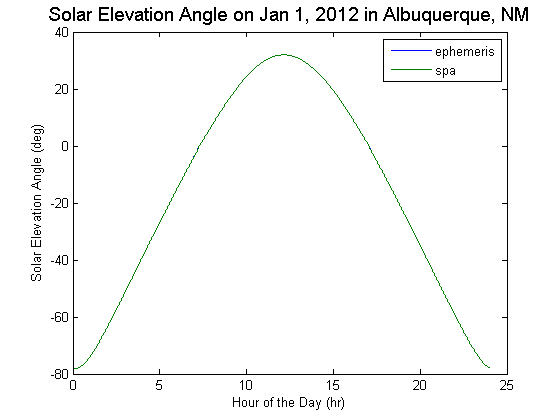
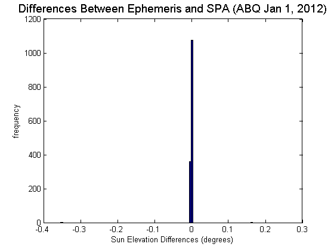

pvl_spa
Calculates the position of the sun given time, location, and optionally pressure and temperature Implements a vectorized version of NREL's Solar Position Algorithm by Reda and Andreas, 2008. This implementation is different and distinct from NREL's copyrighted spa.c (C code).
Contents
Syntax
- [SunAz, SunEl, ApparentSunEl]=pvl_spa(Time, Location)
- [SunAz, SunEl, ApparentSunEl]=pvl_spa(Time, Location, Pressure)
- [SunAz, SunEl, ApparentSunEl]=pvl_spa(Time, Location, Pressure, Temperature)
- [SunAz, SunEl, ApparentSunEl]=pvl_spa(Time, Location, Pressure, Temperature, delta_t)
- [SunAz, SunEl, ApparentSunEl]=pvl_spa(Time, Location, 'temperature', Temperature)
- [SunAz, SunEl, ApparentSunEl]=pvl_spa(Time, Location, 'delta_t', delta_t)
Description
This function implements NREL's Solar Position Algorithm. This algorithm calculates the solar zenith and azimuth angles in the period from the year -2000 to 6000, with uncertainties of +/- 0.0003 degrees based on the date, time, and location on Earth.
- [SunAz, SunEl, ApparentSunEl]=pvl_spa(Time, Location) Uses the given time and location structs to give sun positions with the pressure assumed to be 1 atm (101325 Pa) and the temperature assumed to be 12 C.
- [SunAz, SunEl, ApparentSunEl]=pvl_spa(Time, Location, Pressure) Uses the given time and location structs with the given pressure to determine sun positions. The temperature is assumed to be 12C. Pressure must be given in Pascals (1atm = 101325 Pa). If site pressure is unknown but site altitude is known, a conversion function may be used.
- [SunAz, SunEl, ApparentSunEl]=pvl_spa(Time, Location, Pressure, Temperature) Uses the given time and location structs with the given pressure and temperature to determine sun positions. Pressure must be given in Pascals, and temperature must be given in C.
- [SunAz, SunEl, ApparentSunEl]=pvl_spa(Time, Location, 'temperature', Temperature) Values 'temperature', 'pressure', and 'delta_t', may also be entered in any configuration using the Parameter/Value method of variable entry. Simply use the quoted name of the parameter, then a comma, then the parameter's value.
Inputs
Time is a struct with the following elements, note that all elements can be column vectors, but they must all be the same length
- Time.year = The year in the gregorian calendar
- Time.month = the month of the year (January = 1 to December = 12)
- Time.day = the day of the month
- Time.hour = the hour of the day
- Time.minute = the minute of the hour
- Time.second = the second of the minute
- Time.UTCOffset = the UTC offset code, using the convention that a positive UTC offset is for time zones east of the prime meridian (e.g. EST = -5)
Location is a struct with the following three elements:
- Location.latitude = vector or scalar latitude in decimal degrees (positive is northern hemisphere)
- Location.longitude = vector or scalar longitude in decimal degrees (positive is east of prime meridian)
- Location.altitude = an optional component of the Location struct, not used in the ephemeris code directly, but it may be used to calculate standard site pressure (see pvl_alt2pres function)
- Pressure = site pressure in Pascal. This value is optional, but if it is omitted, the default value is 101325 (sea level standard pressure) is used.
- Temperature = site temperature in C. This input is optional, and if omitted, a value of 12C is used.
- delta_t = The current difference, in seconds, between international atomic time (TAI) and UT1. This value is obtained by observation (see [2]). If omitted, the default value is 66.3 + 0.6175*(Year-2012). This default prediction can be changed as necessary.
Outputs
- SunAz = Azimuth of the sun in decimal degrees from North. 0 = North to 270 = West
- SunEl = Actual elevation (not accounting for refraction)of the sun in decimal degrees, 0 = on horizon. The complement of the True Zenith Angle.
- ApparentSunEl = Apparent sun elevation accounting for atmospheric refraction. This is the complement of the Apparent Zenith Angle.
Example
Plot apparent sun elevation angle for Albuquerque for Jan 1, 2012 and compare to values calculated using pvl_ephemeris This example uses the function pvl_maketimestruct
Location.latitude = 35.04; Location.longitude = -106.62; Location.altitude = 1619; % Create 1-min time series for Jan 1, 2012 DN = datenum(2012, 1,1):1/(24*60):datenum(2012, 1, 1, 23, 59, 59); Time = pvl_maketimestruct(DN, -7); [SunAz, SunEl, ApparentSunEl, SolarTime]=pvl_ephemeris(Time, Location); [SunAz1, SunEl1, ApparentSunEl1]=pvl_spa(Time, Location); dHr = Time.hour+Time.minute./60+Time.second./3600; % Calculate decimal hours for plotting figure plot(dHr,ApparentSunEl) hold all plot(dHr,ApparentSunEl1) legend('ephemeris','spa') title('Solar Elevation Angle on Jan 1, 2012 in Albuquerque, NM','FontSize',14) xlabel('Hour of the Day (hr)') ylabel('Solar Elevation Angle (deg)') dif = ApparentSunEl1-ApparentSunEl;
figure hist(dif,100) title('Differences Between Ephemeris and SPA (ABQ Jan 1, 2012)','FontSize',14) xlabel('Sun Elevation Differences (degrees)') ylabel('frequency')
References
See also
pvl_maketimestruct, pvl_makelocationstruct, pvl_alt2pres
Copyright 2012 Sandia National Laboratories